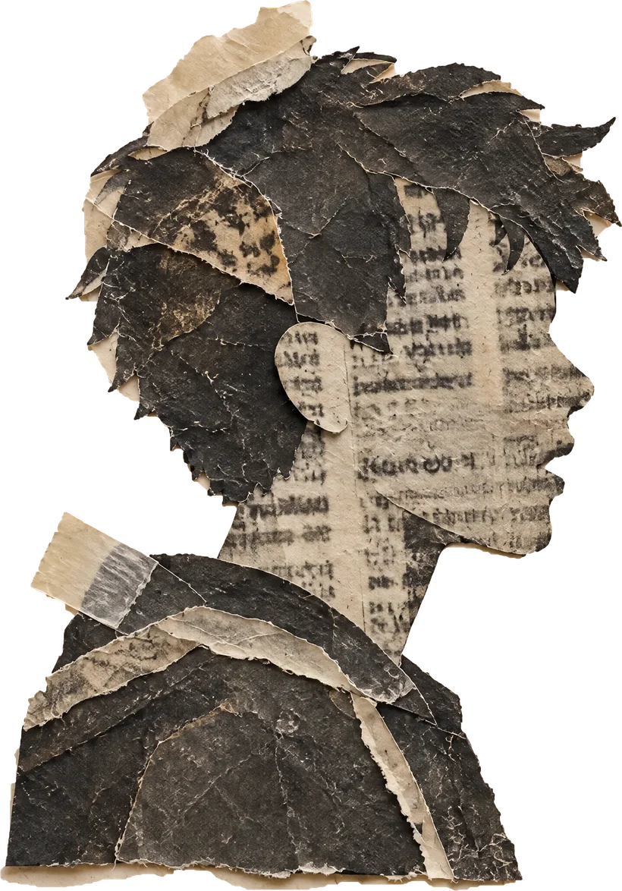
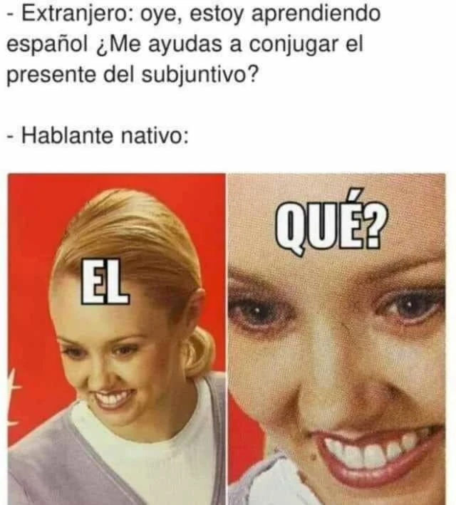
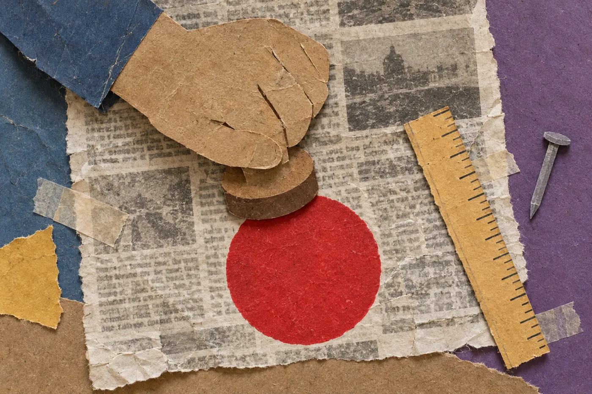
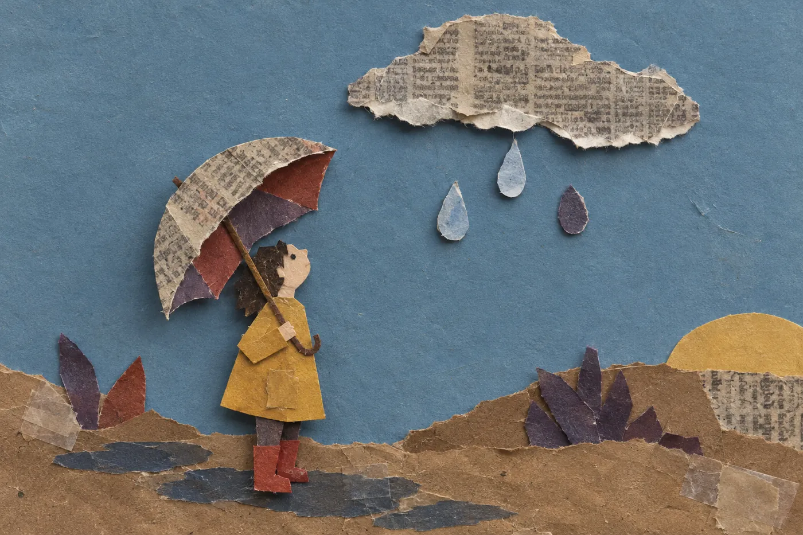
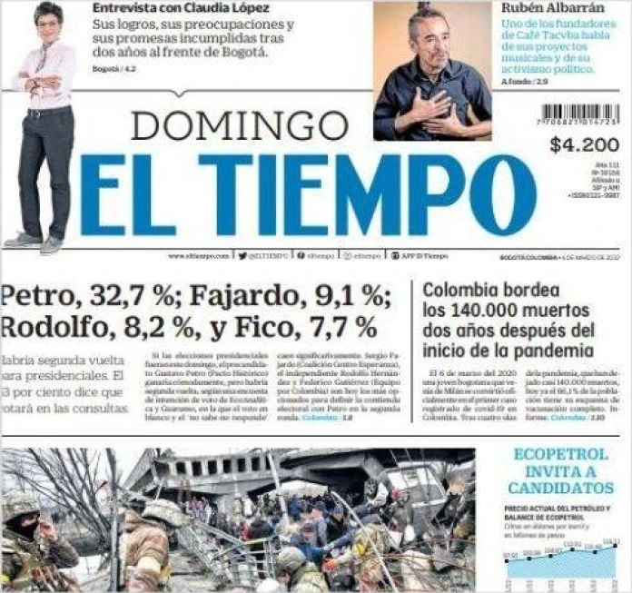
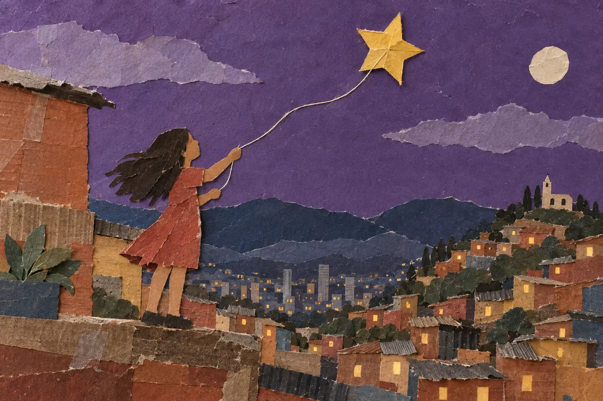
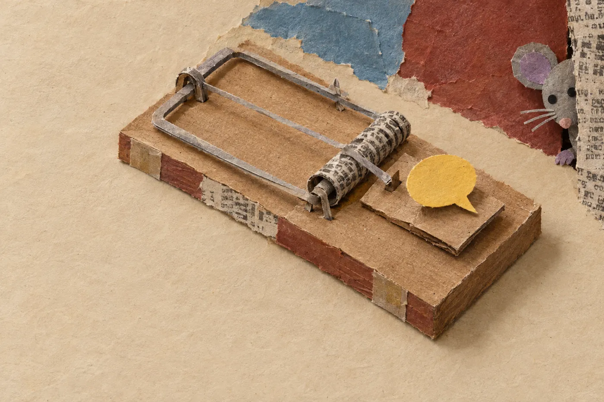
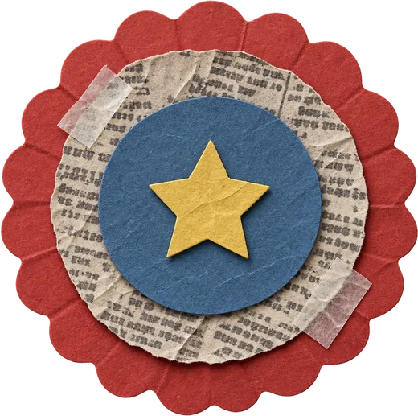

Pregúntale a cualquier colombiano qué es el presente del subjuntivo y lo más probable es que ponga cara de examen sorpresa. Y sin embargo lo usa todos los días, sin pensarlo. Haz la prueba con esta conversación:

Nadie te explicó la regla y la usaste igual. Es como montar en bicicleta: puedes hacerlo perfectamente sin saber explicar la física del equilibrio.
Ese conocimiento escondido sirve para algo más que conjugar: sirve para leer. Los verbos no solo cuentan qué pasó. También dicen qué tan seguro está quien habla, si está adivinando, si desea algo o si te está dando una orden disfrazada.
Los lingüistas llaman a esto modalidad: la actitud de quien habla frente a lo que dice. Es el lenguaje corporal de un texto. El autor nunca escribe «estoy dudando», pero su verbo lo delata.
Pruébalo
Esta es la misma frase contada tres veces. Solo cambia el verbo. Toca cada papel y mira qué le pasa a quien la escribe.
El concejal recibió dinero de un contratista.
Afirma. El periódico lo da por hecho y se hace responsable. Si se equivoca, tendrá que rectificar.

Empecemos por el más confiado de la familia: el modo indicativo. Es el que usamos para presentar algo como un hecho: «El examen es el domingo», «Colombia tiene 32 departamentos», «Se me acabaron los datos». Quien habla en indicativo pone su firma debajo de lo que dice. Es el amigo que nunca duda, ni siquiera cuando debería.
Aquí está la trampa clásica: el indicativo muestra seguridad, no verdad. «La Tierra es plana» está en indicativo y sigue siendo falsa. Cuando un texto usa expresiones como demuestra, confirma, es evidente que o sin duda, el autor te está diciendo «esto lo doy por cierto». Tu trabajo no es creerle de inmediato, sino preguntarte: ¿con qué pruebas sostiene tanta seguridad?

Ahora conozcamos al prudente, el que nunca sale de la casa sin paraguas. Cuando alguien no está seguro, el español le ofrece varias herramientas. El subjuntivo, después de expresiones como es posible que o no creo que: «Es posible que llegue tarde». El condicional: «Podría llover», «Eso sería un error». Y palabras que funcionan como cinturón de seguridad: quizá, al parecer, presuntamente, se cree que.
El mejor laboratorio para verlo es un periódico. Baja despacio: la cámara se va a acercar a la primera página.

El Tiempo, 6 de marzo de 2022. La imagen viene de una captura de baja resolución.
El gramático Andrés Bello le dio a ese tiempo, el de «habría» y «ganaría», un nombre que lo explica todo: pospretérito. Es un pasado que mira hacia adelante sin tocarlo. Por eso es la herramienta favorita de quien quiere contar algo sin comprometerse.
No tiene nada de malo cuando el autor no sabe algo y lo reconoce. El problema empieza cuando la duda se usa para soltar un rumor sin hacerse responsable. Ahí, el lector atento pregunta: ¿quién lo dice?, ¿con qué fuente?

El tercer integrante es el más emocional. Aquí el verbo no describe el mundo como es, sino como alguien quiere que sea: «Ojalá gane Colombia», «Que te vaya bien», «Quiero que me escuches». Cuando el deseo se vuelve exigencia, aparece el imperativo: «Compra ya», «Descarga la app». Toda mamá colombiana domina este modo a la perfección: «Que sea la última vez que deja los platos sucios». Ahí no hay pregunta. Hay una advertencia.
La publicidad y los discursos políticos viven de este modo, porque necesitan que hagas algo. Cuando un texto está lleno de ojalá, es necesario que, debemos o imperativos, el autor no te está informando: te está persuadiendo. No tiene nada de malo, pero hay que reconocerlo para leer con los ojos abiertos.

No siempre es tan obvio. Hay frases que parecen una cosa y son otra. Elige qué actitud delata cada una; la tarjeta se voltea y te dice si caíste.
Este es un párrafo de una columna de opinión inventada. Toca «Subrayar los verbos» y mira cómo cambia la postura del autor de una oración a otra.
El celular la herramienta de estudio más poderosa que . Algunos profesores que , y que en ciertos casos razón. Pero un error prohibirlo sin más. que los colegios a usarlo bien. este año de pelear con las pantallas y a aprovecharlas.
Fíjate en el recorrido: el autor afirma su tesis con certeza, presenta a quienes piensan distinto con verbos de duda y cierra pidiendo. No es un texto neutral: quiere convencerte. Eso no lo dice en ninguna parte. Lo dicen sus verbos.
Ahora tú
Detector de actitud
El detector busca pistas como «ojalá», «al parecer» o los verbos terminados en «-ría». No entiende ironía ni contexto: tu cabeza sigue siendo el mejor detector.
Truco para el examen Saber
Cuando una pregunta te pida la «actitud» o la «intención» del autor, vuelve a los verbos. Si el autor escribió «podría», descarta las opciones que dicen que «afirma» o «demuestra». Si aparecen «ojalá», «debemos» o imperativos, busca la opción que hable de proponer o persuadir.
Elige el verbo que delata
1 de 3Toca una ficha y luego el espacio donde va. Sobran fichas, y todas suenan parecido.
Último reto
Pon a prueba tu ojo
«Las redes sociales podrían estar afectando la capacidad de concentración de los adolescentes. Algunos estudios sugieren una relación, aunque es posible que otros factores, como las horas de sueño, también influyan. Sería necesario investigar más antes de culpar solo a las pantallas.»
¿Cuál es la actitud del autor frente a la relación entre redes sociales y concentración?
La próxima vez que leas una noticia, un anuncio o un trino, busca el verbo y pregúntale qué tan seguro está. Vas a descubrir que los textos dicen mucho más de lo que dicen. Y si alguien te pregunta qué es el presente del subjuntivo, ya tienes respuesta: «Ojalá que no me lo pregunten».

0 aciertos de 9 retos. Los retos están en el texto: bolitas, casos trampa, la actividad y la pregunta final.
Referencias
Bello, A. (1847). Gramática de la lengua castellana destinada al uso de los americanos. Santiago de Chile: Imprenta del Progreso.
Real Academia Española y Asociación de Academias de la Lengua Española (2009). Nueva gramática de la lengua española. Madrid: Espasa.
El Tiempo (6 de marzo de 2022). Primera página, edición dominical.
Retrato de Andrés Bello atribuido a Raymond Monvoisin, dominio público (Wikimedia Commons).